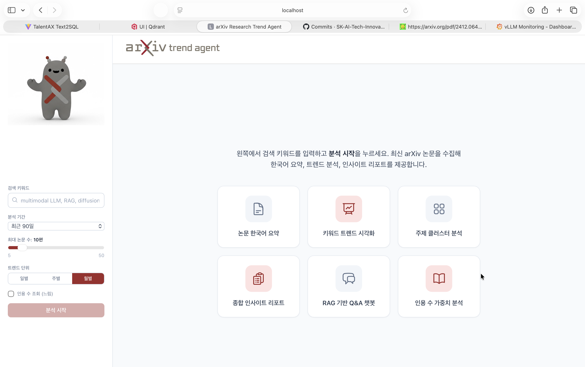

arXiv Trend Agent
LangGraph-based Multi-Agent service for automated arXiv paper analysis
Overview
arXiv Trend Agent is a LangGraph-based Multi-Agent service that automatically collects the latest arXiv papers, generates Korean-language summaries, performs trend analysis, and produces insight reports. Users specify a keyword and the system retrieves citation-ranked papers via arXiv API + Semantic Scholar, then routes them through a Supervisor → Worker pipeline for end-to-end analysis.

System Architecture
The backend runs a LangGraph StateGraph with a Supervisor coordinating five specialized workers. Real-time progress is streamed to the browser via Server-Sent Events (SSE), and results are presented in a five-tab React UI.
User (Browser)
│ POST /api/research
▼
React Frontend ←────────────── SSE real-time progress
│ GET /api/research/stream/{task_id}
▼
FastAPI Backend (port 8080)
│ asyncio + ThreadPoolExecutor
▼
LangGraph Supervisor
├── Search Worker → arXiv API + Semantic Scholar (citation-ranked)
├── Ingest Worker → text-embedding-3-large → FAISS
├── Summary Worker → gpt-4o-mini (Few-shot + CoT + Structured Output, ×5 parallel)
├── Trend Worker → KMeans clustering + RAG context collection
└── Report Worker → gpt-4o (role prompt + CoT)
│
▼
Result JSON → React 5-tab UI
Key Features
Paper Collection: arXiv API keyword search combined with Semantic Scholar citation counts for quality-based paper selection.
Korean Summarization: gpt-4o-mini with Few-shot prompting, Chain-of-Thought reasoning, and Structured Output for per-paper structured Korean summaries.
Trend Visualization: Daily/weekly/monthly keyword frequency line and bar charts built with Recharts.
Cluster Analysis: KMeans + PCA 2D Scatter Plot for topic clustering across collected papers.
Insight Report:
gpt-4o-generated comprehensive analysis report with .md download support.
RAG Q&A Chatbot: FAISS vector DB-backed multi-turn conversational Q&A over collected papers.
Tech Stack
Frontend: React 18 + TypeScript + Tailwind CSS (Vite), Recharts, react-markdown
Backend: FastAPI + SSE, LangGraph StateGraph
AI / ML: Azure OpenAI (gpt-4o, gpt-4o-mini, text-embedding-3-large),
FAISS Vector DB, scikit-learn (KMeans, PCA)